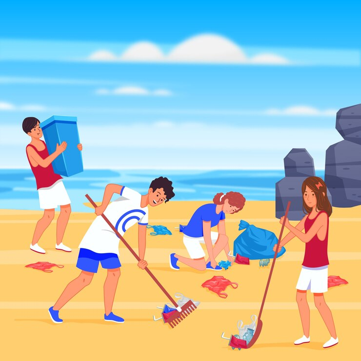
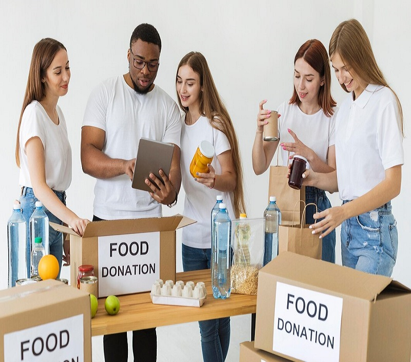

Explore Opportunities

🌊 Beach & Waterway Cleanup – Protect Our Oceans! 🏖️
📢 Join the movement! Help us clean beaches and waterways to reduce plastic pollution and protect marine life.
💙 Campaign Goals:
✅ Remove 500,000 lbs of trash from beaches and rivers
✅ Educate the community on ocean conservation
✅ Promote eco-friendly lifestyle choices
🗓️ Event Date: June 8, 2025 (World Oceans Day)
📍 Location: Beaches, rivers, and lakes worldwide
🤝 Volunteer Roles:
🧹 Beach Cleaners – Pick up litter and sort recyclables
📢 Awareness Ambassadors – Educate people about reducing plastic waste
🚚 Logistics Helpers – Assist in waste collection & transportation

🌱 Green Future Initiative – Tree Planting & Reforestation 🌳
📢 Let’s restore nature! Be part of a movement to plant trees and combat climate change.
💚 Campaign Goals:
✅ Plant 10,000+ trees in urban and rural areas
✅ Promote reforestation and green spaces
✅ Protect biodiversity by restoring lost forests
🗓️ Event Date: March 22, 2025 (World Water Day)
📍 Location: Parks, forests, and urban areas
🤝 Volunteer Roles:
🌱 Tree Planters – Help plant and maintain saplings
💧 Watering Teams – Ensure newly planted trees thrive
📷 Media Volunteers – Capture and promote campaign impact

🤲 Feed the Hungry – Meal Distribution Program 🍲
📢 Hunger shouldn’t exist! Help us provide nutritious meals to those in need.
🍛 Campaign Goals:
✅ Serve 1 million meals to low-income families
✅ Rescue and repurpose surplus food from restaurants
✅ Build sustainable food programs for long-term impact
🗓️ Event Date: October 16, 2025 (World Food Day)
📍 Location: Homeless shelters, food banks, and community kitchens
🤝 Volunteer Roles:
🥘 Meal Preparers – Cook and pack food for distribution
🚗 Delivery Helpers – Transport meals to those in need
📢 Fundraisers – Organize donation drives for food & supplies

🩸 Blood Donation Drive – Save Lives! ❤️
📢 One pint of blood can save up to three lives! Join our donation campaign and be a hero.
🩸 Campaign Goals:
✅ Collect 50,000+ blood donations for hospitals
✅ Spread awareness on the importance of blood donation
✅ Build a reliable emergency donor network
🗓️ Event Date: June 14, 2025 (World Blood Donor Day)
📍 Location: Hospitals, blood banks, and mobile donation centers
🤝 Volunteer Roles:
💉 Blood Donors – Donate and encourage others to do the same
📋 Event Coordinators – Help organize blood drives
📢 Social Media Ambassadors – Spread awareness & recruit donors

🌿 Zero Waste Challenge – Community Cleanup & Recycling ♻️
📢 Let’s make our communities waste-free! Join our Zero Waste campaign and promote sustainability.
♻️ Campaign Goals:
✅ Reduce landfill waste by 50% in participating communities
✅ Promote recycling & composting initiatives
✅ Conduct awareness workshops on sustainable living
🗓️ Event Date: November 15, 2025 (America Recycles Day)
📍 Location: Cities, schools, and workplaces
🤝 Volunteer Roles:
🗑️ Cleanup Crews – Collect and separate waste
🎤 Eco-Educators – Teach communities about sustainability
🚲 Logistics Coordinators – Manage waste disposal & recycling centers